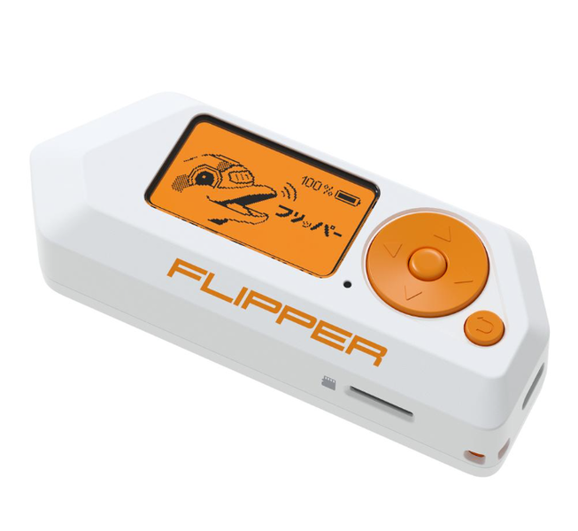
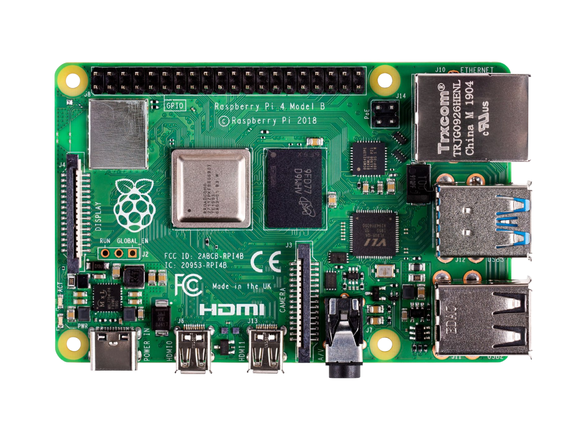
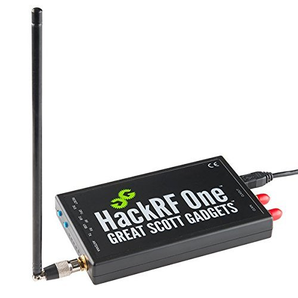

> Flipper Zero

A versatile multi-tool for interacting with RFID, IR, NFC and sub-GHz radio signals. Great for ethical experimentation and protocol analysis.
Explore some of the most iconic hardware and devices used in cybersecuirty labs and hacking experiments.

A versatile multi-tool for interacting with RFID, IR, NFC and sub-GHz radio signals. Great for ethical experimentation and protocol analysis.

A tiny yet powerful single-board computer used to run servers, honeypots or simulate small-scale network environments.

A seemingly ordinary USB flash drive that acts as a programmable keyboard. Once connected, it can automatically execute scripted keystrokes, making it a powerful tool for penetration testing and automation.

A software-defined radio (SDR) for sending and receiving wide-band RF signals. Used for advanced wireless and IoT security research.
| Gadget | Primary Use | Difficulty |
|---|---|---|
| Flipper Zero | RFID / IR / Sub-GHz testing | Medium |
| Raspberry Pi | Lab server / network sandbox | Easy |
| USB Rubber Ducky | Keyboard-emulated payloads | Medium |
| HackRF One | Wideband RF experimentation | Hard |